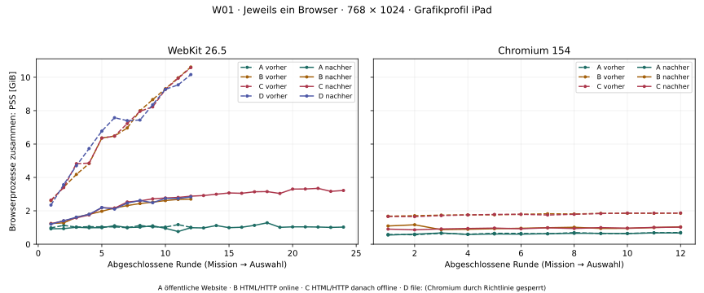
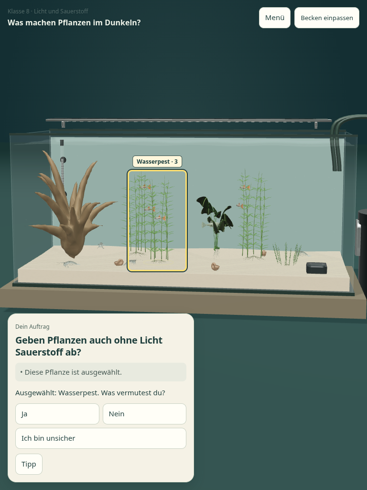
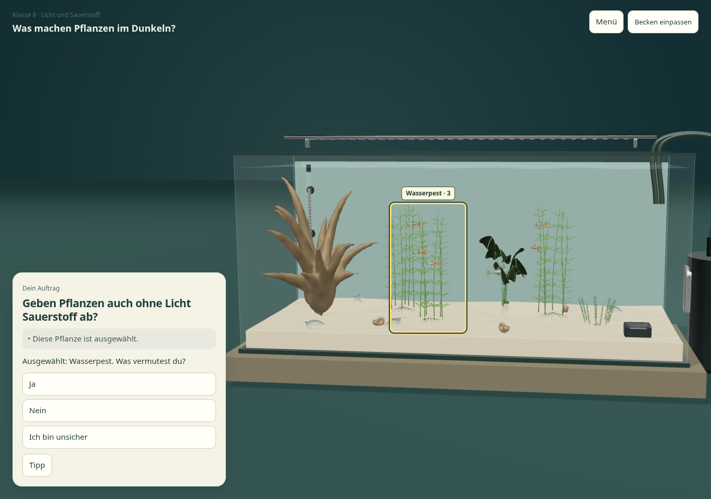
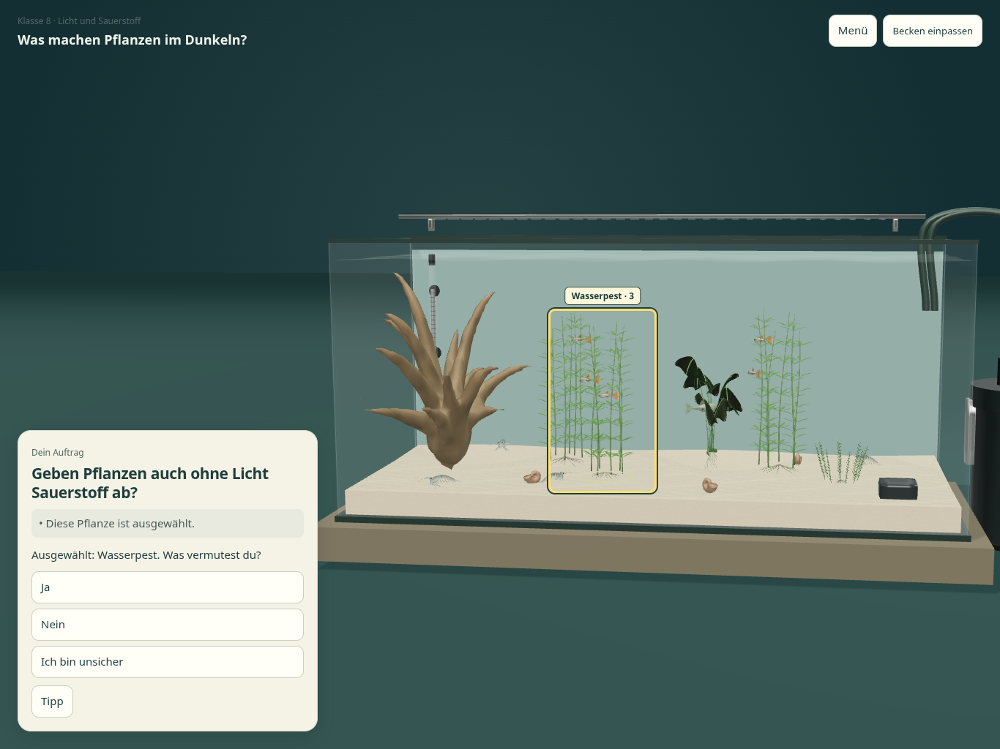

Aquarium 1.0 – W01/U01 SichtbelegeAquarium 1.0 · W01/U01
Echte Browseraufnahmen und Prozessmessungen vom 24.10.2026. Linux, softwarebasierte Grafik, Playwright-Touch. Keine physische iPad-/Safari-Abnahme.
Webversion 1.0: FREIGABEFÄHIG · Standalone: EINGESCHRÄNKT · Physische iPad-/Safari-Abnahme: NOCH NICHT GEPRÜFT. Die große Einzeldatei ist als geprüftes Desktop-Backup erhalten; keine pauschale Zusage für speicherarme Geräte.
W01: tatsächlicher Prozessspeicher
Ein Browser pro Lauf, gleiche Auflösung und Grafikeinstellung. Dargestellt ist der anteilig zugerechnete physische Speicher (PSS) aller Browserprozesse nach jeder Rückkehr zur Missionsauswahl. Der Automatisierungstreiber wird getrennt gemessen. Die gestrichelten Linien zeigen die unveränderte Ausgangsversion; durchgezogene Linien den Kandidaten.

Zahlen und Status aller Fälle · Hardware, Spitzen und Grenzen stehen im Release-Bericht.
U01: ohne Scrollen erreichbarer Tipp
Handlung: M1 beginnen → Wasserpest im Aquarium antippen → drei Vermutungen lesen → Tipp direkt antippen → schließen → Vermutung wählen. Im alten Hochformat war zuvor Scrollen nötig. Die kurze Ja/Nein-Zeile schafft Platz; alle Antworten und der Tipp behalten mindestens 44 Pixel hohe Touch-Ziele. Die Bilder wurden nicht nachbearbeitet.
WebKit · 768 × 1024
Tipp vorher vollständig sichtbar: nein. Nachher: ja, ohne Scrollen direkt angetippt. Touch-Fläche: 57 × 44 Pixel. Projizierte Aquariumgrenzen unverändert (Abweichung < 0,01 Pixel).
WebKit · 1366 × 960
Tipp vorher vollständig sichtbar: ja. Nachher: ja, ohne Scrollen direkt angetippt. Touch-Fläche: 57 × 44 Pixel. Projizierte Aquariumgrenzen unverändert (Abweichung < 0,01 Pixel).
 Vorher · Originalbild öffnenNachher · Originalbild öffnen
Vorher · Originalbild öffnenNachher · Originalbild öffnenWebKit · 1366 × 1024
Tipp vorher vollständig sichtbar: ja. Nachher: ja, ohne Scrollen direkt angetippt. Touch-Fläche: 57 × 44 Pixel. Projizierte Aquariumgrenzen unverändert (Abweichung < 0,01 Pixel).
Vorher · Originalbild öffnenNachher · Originalbild öffnen Chromium · 768 × 1024
Tipp vorher vollständig sichtbar: nein. Nachher: ja, ohne Scrollen direkt angetippt. Touch-Fläche: 57 × 44 Pixel. Projizierte Aquariumgrenzen unverändert (Abweichung < 0,01 Pixel).
Vorher · Originalbild öffnen
Nachher · Originalbild öffnen Chromium · 1366 × 960
Tipp vorher vollständig sichtbar: ja. Nachher: ja, ohne Scrollen direkt angetippt. Touch-Fläche: 57 × 44 Pixel. Projizierte Aquariumgrenzen unverändert (Abweichung < 0,01 Pixel).
Vorher · Originalbild öffnen
Nachher · Originalbild öffnen Chromium · 1366 × 1024
Tipp vorher vollständig sichtbar: ja. Nachher: ja, ohne Scrollen direkt angetippt. Touch-Fläche: 57 × 44 Pixel. Projizierte Aquariumgrenzen unverändert (Abweichung < 0,01 Pixel).

Vorher · Originalbild öffnenNachher · Originalbild öffnen